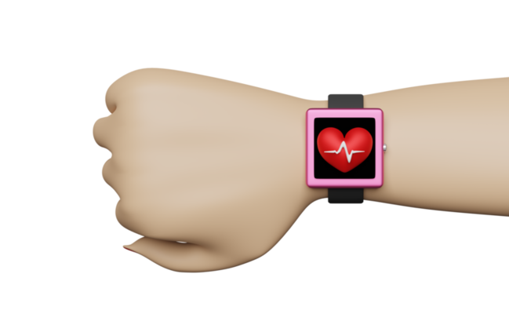

Our project focuses on harnessing artificial intelligence to support the early detection of Autism Spectrum Disorder (ASD) by analyzing facial expressions, gaze direction, and micro-expressions. These subtle, non-verbal cues often contain vital information that can help clinicians and parents recognize developmental differences sooner.
Through computer vision and deep learning models, we aim to create a reliable, non-invasive system that complements traditional diagnostic methods. The goal is to empower caregivers and health professionals with a technology that enhances early intervention and personalized care for children.
AI-based facial and emotion recognition
Accurate early screening for Autism
Non-invasive and child-friendly technology
Learn MoreFeatures
Our system utilizes advanced AI algorithms to interpret facial and gaze data, offering early insights into potential autism-related behavioral patterns. This makes screening faster, accessible, and highly reliable.
AI-Powered
Gaze Tracking
Child-Friendly
Data Privacy
